Fixed bills reserved
−$1,425.00
Rent, utilities, subscriptions and insurance are smoothed and locked down first. Goals and leisure can’t touch this money.
- Method
- Cadence smoothing
- Status
- 100% reserved
WageRoute puts every paycheck through a deterministic order of operations: protect fixed bills, distribute the true surplus into goals and debt payoff, and leave what’s left completely guilt-free.
Rent, utilities, subscriptions and insurance are smoothed and locked down first. Goals and leisure can’t touch this money.
The surplus is split by percentage: a 3–6 month emergency cushion, a vacation fund, car maintenance and debt payoff.
Leisure is what remains. Steps 1 and 2 have already covered every commitment, so you can spend this without second-guessing.
Real screens from WageRoute 1.3.1, filled with its built-in demo profile.
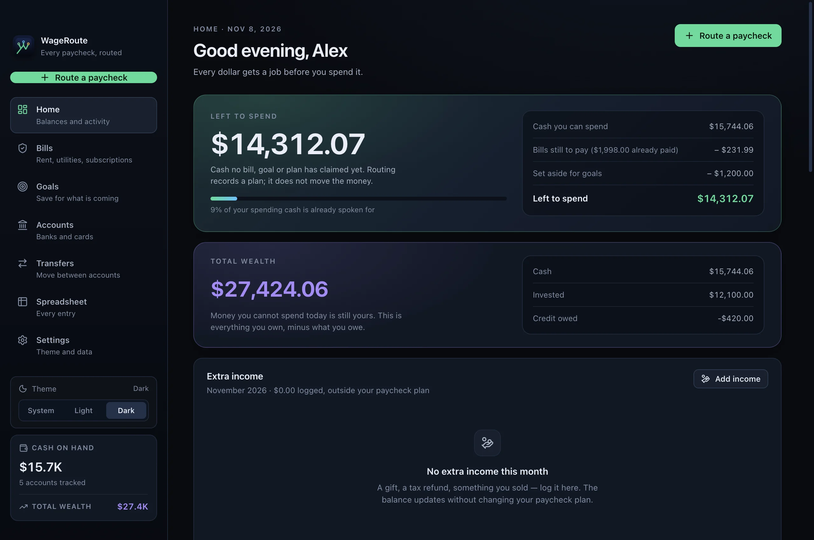
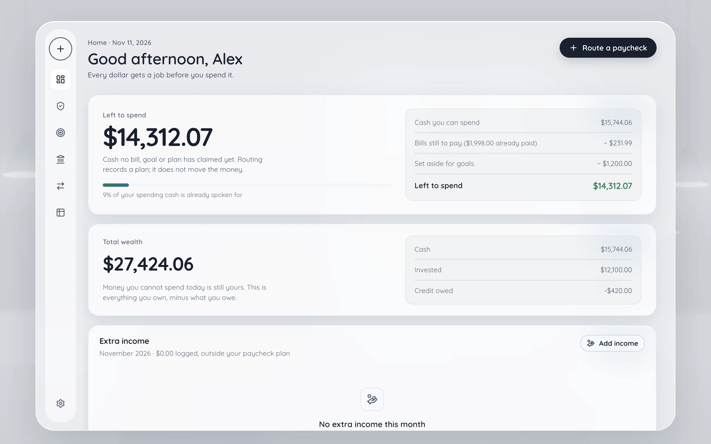
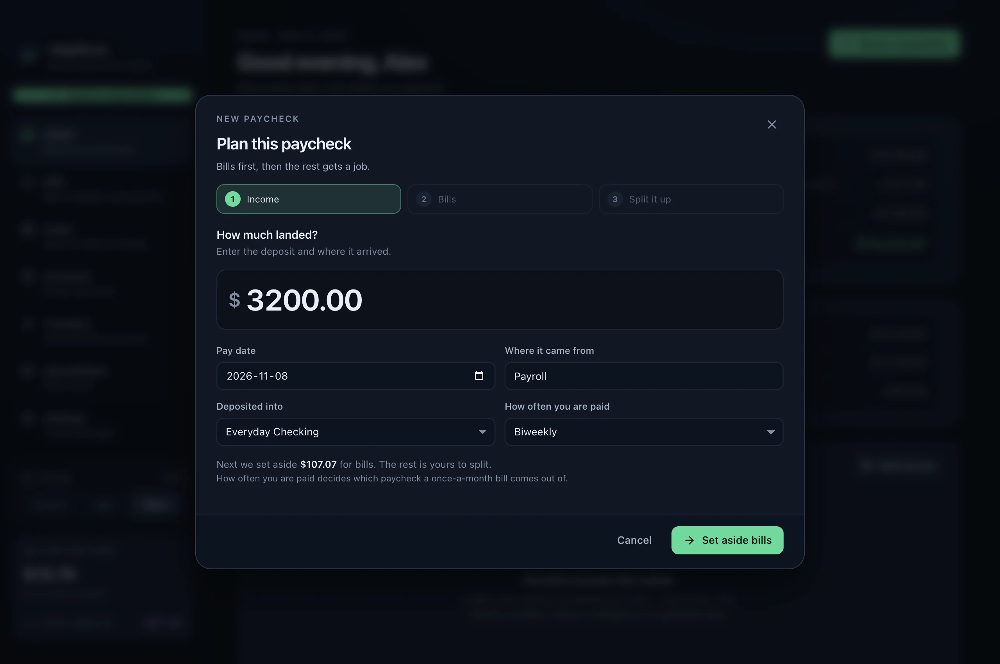
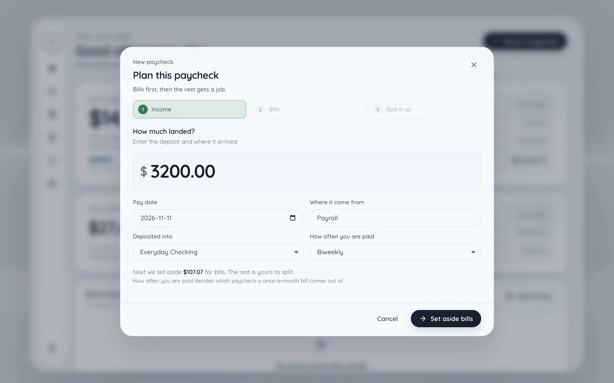
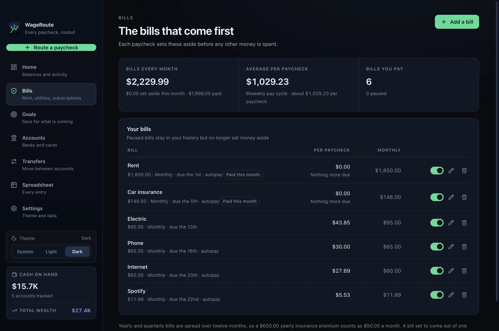
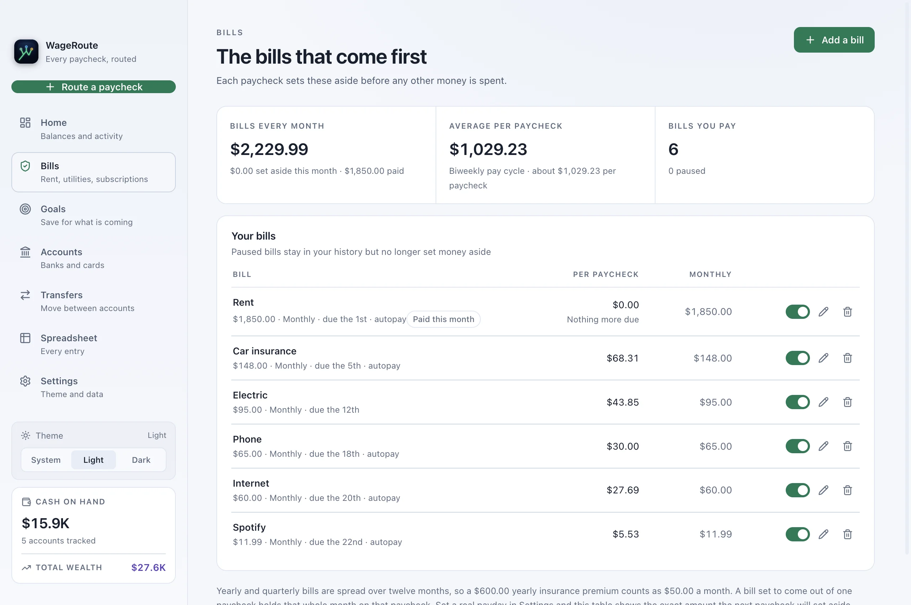
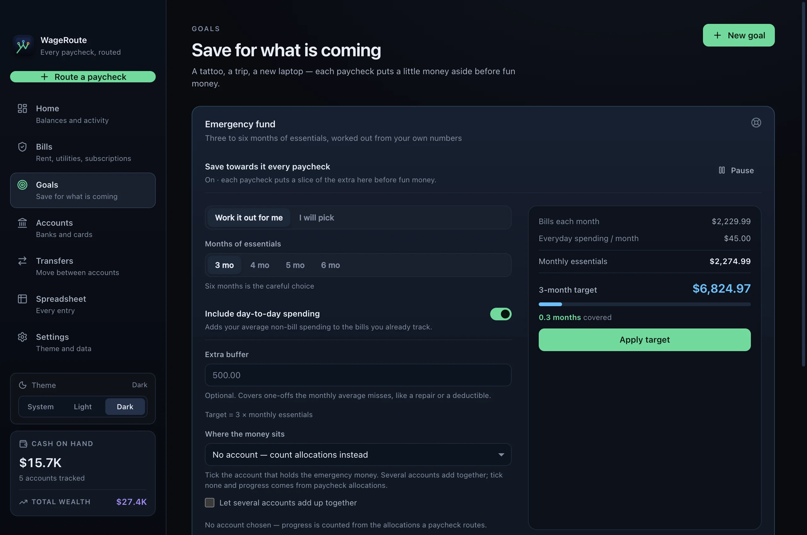
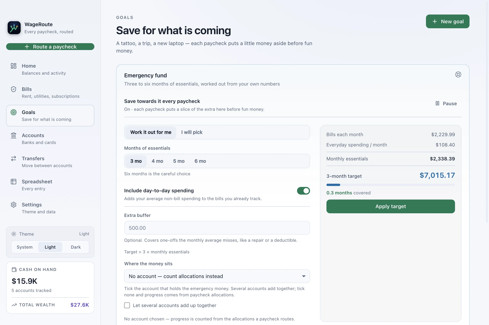
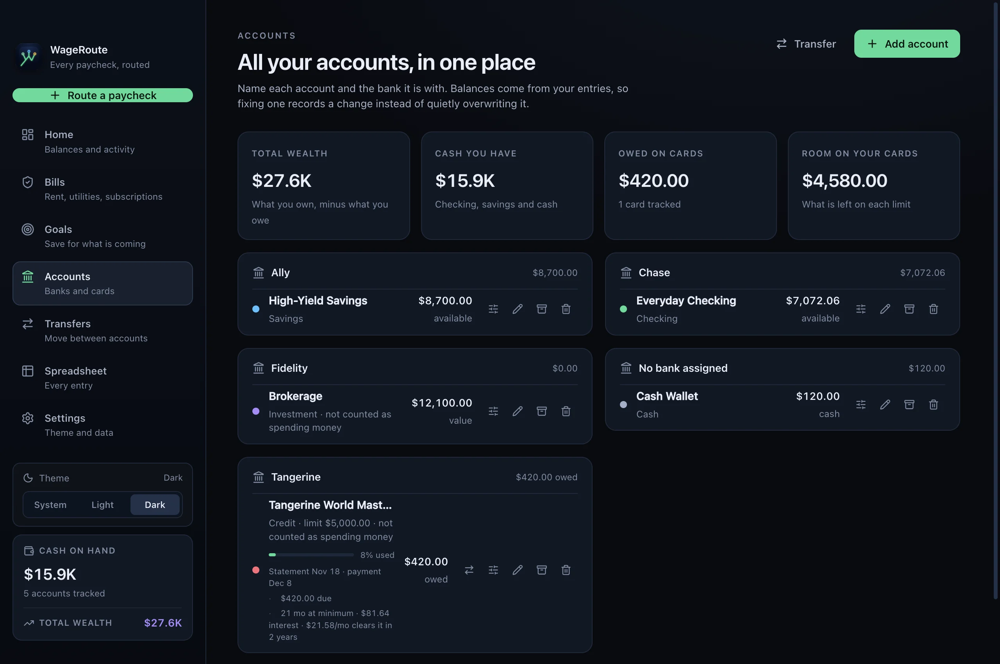
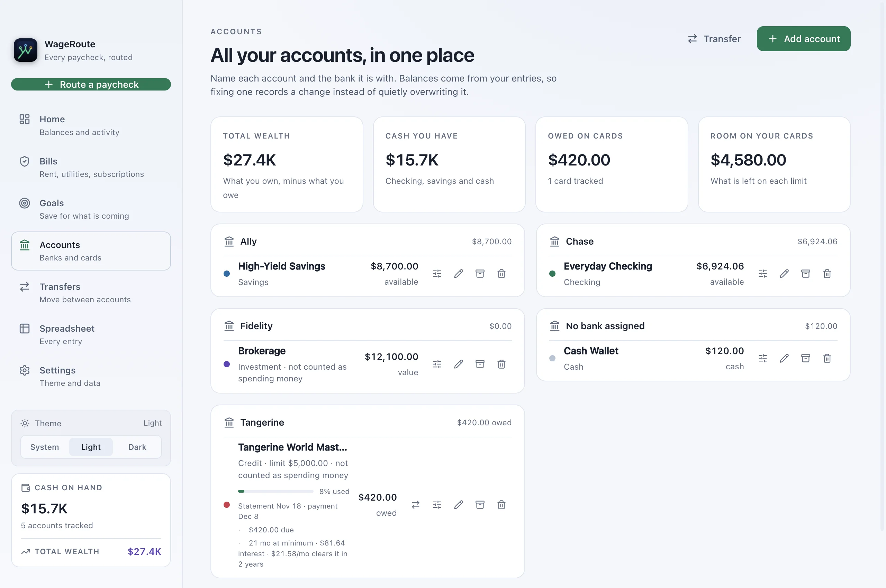
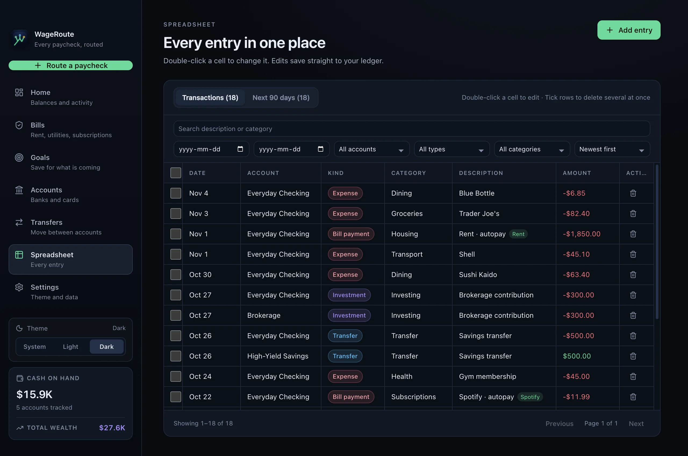
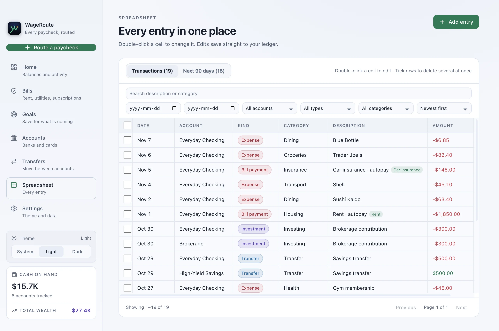
Most personal finance apps guess what you'll spend in a calendar month. WageRoute aligns with how your money actually arrives: paycheck by paycheck.
Every recurring commitment—whether paid weekly, monthly, or annually—is converted into an exact per-paycheck reserve so due dates never catch you off guard.
Dedicated targets for taxes, gifts, or travel. Once a sinking fund reaches its cap, it stops taking money, and unused goal budget sweeps into savings.
Calculates your 3–6 month safety net automatically based on your real Priority Wall liabilities and essential variable spending.
Track real card statement cycles, minimum payments, and APR impact. See how long a balance will take to eliminate and prevent interest traps.
Move funds between checking, savings, and credit accounts with live balance previews, quick contextual chips, and instant atomic ledger records.
Import CSV and QIF bank files with automated deduplication. Matches identical transactions cleanly without duplicating coffees or routine purchases.
Your financial life is nobody else's business. WageRoute runs entirely on your desktop without an external backend, third-party analytics, or cloud sync.
Read Security Architecture →Free, standalone releases for macOS, Windows, and Linux.
Separate builds for Apple Silicon & Intel
Download .dmg Right-click → Open to bypass GatekeeperWindows 10 & Windows 11
Download Setup .exe Click "More info" → "Run anyway"Ubuntu, Debian, Fedora & Arch
Download Packages chmod +x WageRoute.AppImage$ brew tap ReVax-2007/wageroute $ brew install --cask wageroute
Update later with brew upgrade --cask wageroute. Homebrew checks the DMG against a pinned SHA-256 first.
$ curl -LO https://github.com/ReVax-2007/wageroute/releases/download/v1.3.1/WageRoute-1.3.1-arm64.dmg $ hdiutil attach -nobrowse -mountpoint /tmp/wageroute-dmg WageRoute-1.3.1-arm64.dmg $ cp -R /tmp/wageroute-dmg/WageRoute.app /Applications/ $ hdiutil detach /tmp/wageroute-dmg
curl never sets the quarantine flag, so there is no Gatekeeper prompt. Intel Macs: use WageRoute-1.3.1-x64.dmg.
$ curl -fsSL https://github.com/ReVax-2007/wageroute/releases/download/v1.3.1/WageRoute-1.3.1-x86_64.AppImage -o WageRoute.AppImage $ chmod +x WageRoute.AppImage && ./WageRoute.AppImage
On Ubuntu 22.04+ install FUSE 2 first (sudo apt install libfuse2t64 on 24.04). ARM: WageRoute-1.3.1-arm64.AppImage.
$ curl -fsSLO https://github.com/ReVax-2007/wageroute/releases/download/v1.3.1/WageRoute-1.3.1-amd64.deb $ sudo apt install ./WageRoute-1.3.1-amd64.deb
Fedora and openSUSE: the .rpm packages are on the release page.
$ sudo xattr -rd com.apple.quarantine /Applications/WageRoute.app
Run after dragging the app to Applications. Without it, use right-click → Open the first time.
PS> Unblock-File -Path "$env:USERPROFILE\Downloads\WageRoute.Setup.1.3.1.exe"
Removes the download mark so SmartScreen does not stop it. Or: Properties → Unblock.
$ chmod +x ~/Downloads/WageRoute-1.3.1-x86_64.AppImage
Browsers drop the executable bit. The .deb and .rpm packages need nothing.
Two containers, built from source: Pocket as a static site behind nginx, and the desktop app streamed to your browser over noVNC.
$ git clone https://github.com/ReVax-2007/wageroute.git $ cd wageroute $ docker compose up -d --build
Then open Pocket at http://localhost:8173 and the desktop at http://localhost:6080/vnc.html?autoconnect=true. Get the VNC password with docker compose logs desktop.
127.0.0.1. To reach a phone, put TLS in front: the compose file’s edge profile adds Caddy and a login.wageroute-data holds the database and its key file. docker compose down -v deletes it, so export a backup first.